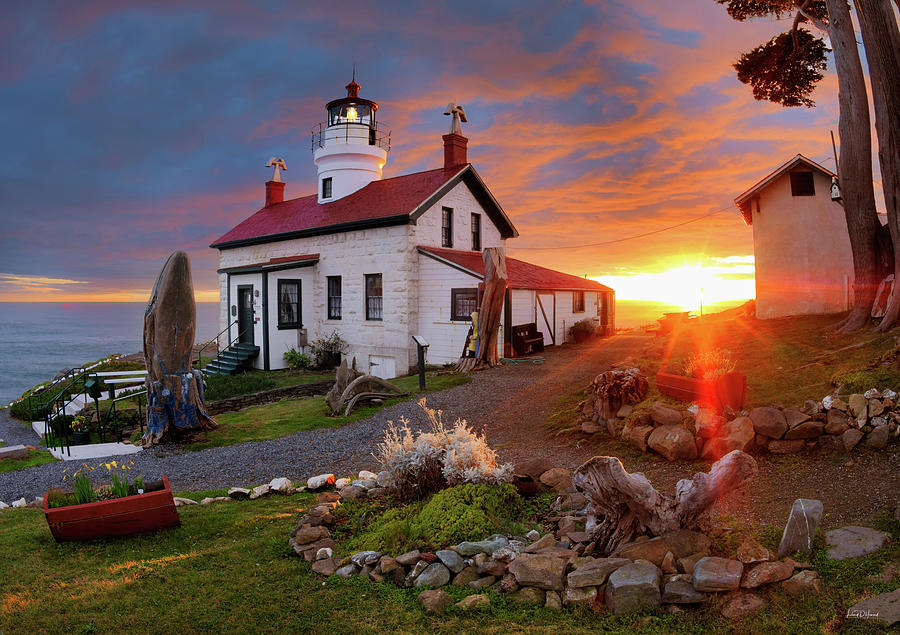
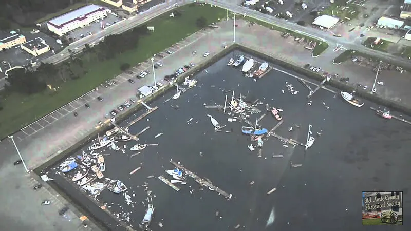

Founding
Crescent city was founded by Native American tribes, including the Yurok, Tolowa, Karok, Chilula, and
Wiyot. The city was
named after the crescent-shaped stretch of sandy beach south of the city. European settlers arrived in
the 1850s and took over the town.
The city then became an important port on the California coast, serving as a gateway to the gold fields
of california, as well as an access point for the redwood forests.
The Battery Point Lighthouse, a defining landmark of the city, was built in 1856. It is still standing today and is open to the public.
You can access the lighthouse on foot at low tide.

Battery Point Lighthouse
Major Historical Events
- At the start of World War two, The SS Emidio, an oil tanker, was sunk. It was the first casualty of the Imperial Japanese Navy's submarine force action on California's Pacific Coast.
- In 1964, Crescent City was hit by a tsunami caused by the Great Alaska Earthquake. The tsunami killed 11 people and destroyed much of the city's downtown area.
- In 2006, Crescent City was hit by another tsunami caused by an earthquake off the coast of Japan. The tsunami caused significant damage to the city's harbor and fishing industry.

Post-Tsunami damage
(hover over the image to apply a filter)